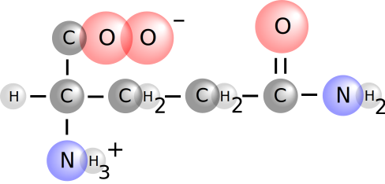

MERN Stack Science Flashcard App

In order to practice my skills in the MERN stack I created this flashcard app. The React front-end displays a home page with tiles for various science categories and React Router links them to their respective flashcard pages. Flashcard data is stored in MongoDB with help from Mongoose. The Node.js/Express back-end picks a random item from the database when an API call is made from Axios on the front-end.
TailwindCSS, Styled-Components, and Font Awesome are used for styling and flashcard graphics were created in Adobe Illustrator.
Purpose of the project
Recently I found some old flashcards I made when I was in university working on my science degree.
I had been searching for a project idea in order to practice my skills in the MERN stack, particularly something that would allow me to utilize MongoDB and Mongoose. A flashcard app was a good fit, as I could store flashcard data in my database, create an API, and fetch items from the API to display on the front-end.
Using science as the subject area made the project fun and interesting for me and I enjoyed revisiting the topics I used to study.
Design
A dark background is used across the app as it contrasted nicely with the light coloured flashcards. An image from unsplash was added for texture, with a dark coloured background-blend-mode overlayed on top in the CSS.
As I use Tailwind and Styled-Components for work I wanted to incorporate them in this project for extra practice.
Tailwind was great for making the app fonts and colors look consistent and clean. When I wanted more control I used Styled-Components, to create React components directly in the files where I was using them without relying on a separate CSS stylesheet.
Icons were used throughout the app to break up areas of text and improve the aesthetics of the app. The icons are from Font Awesome.
Flashcard categories are displayed in a tile format, each assigned a different color. The colours are carried over to the flashcard pages in the “Back to home” and “Next” buttons.
The graphics used for the amino acid and organic chemistry flashcards I created myself in Adobe Illustrator. In doing so I was able to make the molecules look exactly how I wanted, practice using Illustrator, and not have to worry about image copyright.
Notes on development
In my previous React apps I fetched data from an external API. Since I already had my own flashcard data this was a great opportunity to practice setting up my own database with MongoDB. Mongoose was used to create schemas for each item to follow; each science category had a different schema depending on the type of data I had available. I then created an API with get and post routes that the front-end could access. A separate npm package was brought into the app to obtain the "get random item" functionality.
The flashcard components on the front-end make an Axios call to the "get random" route for their respective category. The UseState React hook was used to store state. Whenever the flashcard page loads, or the "Next" button is clicked, a new random item is retrieved from the database and stored in the "item" variable for use on the flashcard. The "flipped" variable stores which "side" of the flashcard is currently visible, and is returned to the "question" side of the flashcard when a new API call is made. This is so the user doesn't see the answer to the next flashcard before they see the term or image.
Deploying this app on Heroku presented its own set of challenges, as I have not deployed a full MERN stack app before creating this app. It was especially important to ensure that my server.js file in the back-end was pointing to the appropriate folder to get the static website files from the React build process, and that the connection was being made to the database.
If you would like to read more details about the challenges of this project and how I handled them you may view this post on my blog.